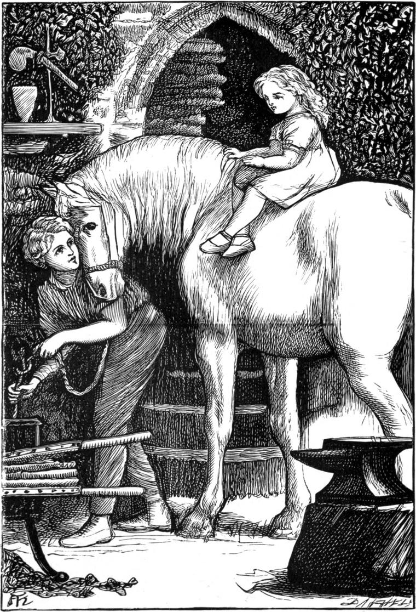

During the time he was at college, he did often think of what Mr Shepherd had said to him. When he was tempted to any self-indulgence, the thought would always rise that this was not the way to become able to help people, especially the real selves of them; and, when amongst the medical students, he could not help thinking how much better doctors some of them would make if they would but try the medicine of the other basket for themselves. He thought this especially when he saw that they cared nothing for their patients, neither had any desire to take a part in the general business for the work's sake, but only wanted a practice that they might make a living. For such are nearly as unfit to be healers of the body, as mere professional clergymen to be healers of broken hearts and wounded minds. To do a man good in any way, you must sympathise with him—that is, know what he feels, and reflect the feeling in your own mirror; and to be a good doctor, one must love to heal; must honour the art of the physician and rejoice in it; must give himself to it, that he may learn all of it that he can—from its root of love to its branches of theory, and its leaves and fruits of healing.
He always came home to Priory Leas for the summer intervals, when you may be sure there was great rejoicing—loudest on the part of Agnes, who was then his constant companion, as much so, at least, as she was allowed. Willie saw a good deal of Mona Shepherd also, who had long been set free from the oppressive charge of Janet, and was now under the care of a governess, a wise, elderly lady; and as she was a great friend of Mrs Macmichael, the two families were even more together now than they had been in former years.
Of course, while at college he had no time to work with his hands: all his labour there must be with his head; but when he came home he had plenty of time for both sorts. He spent a couple of hours before breakfast in the study of physiology; after breakfast, another hour or two either in the surgery, or in a part of the ruins which he had roughly fitted up for a laboratory with a bench, a few shelves, and a furnace. His father, however, did not favour his being in the latter for a long time together; for young experimenters are commonly careless, and will often neglect proper precautions—breathing, for instance, many gases they ought not to breathe. He was so careful over Agnes, however, that often he would not let her in at all; and when he did, he generally confined himself to her amusement. He would show her such lovely things!—for instance, liquids that changed from one gorgeous hue to another; bubbles that burst into flame, and ascended in rings of white revolving smoke; light so intense, that it seemed to darken the daylight. Sometimes Mona would be of the party, and nothing pleased Agnes or her better than such wonderful things as these; while Willie found it very amusing to hear Agnes, who was sharp enough to pick up not a few of the chemical names, dropping the big words from her lips as if she were on the most familiar terms with the things they signified—phosphuretted hydrogen, metaphosphoric acid, sesquiferrocyanide of iron, and such like.
Then he would give an hour to preparation for the studies of next term; after which, until their early dinner, he would work at his bench or turning-lathe, generally at something for his mother or grandmother; or he would do a little mason-work amongst the ruins, patching and strengthening, or even buttressing, where he thought there was most danger of further fall—for he had resolved that, if he could help it, not another stone should come to the ground.
In this, his first summer at home from college, he also fitted up a small forge—in a part of the ruins where there was a wide chimney, whose vent ran up a long way unbroken. Here he constructed a pair of great bellows, and set up an old anvil, which he bought for a trifle from Mr Willett; and here his father actually trusted him to shoe his horses; nor did he ever find a nail of Willie's driving require to be drawn before the shoe had to give place to a new one.

In the afternoon, he always read history, or tales, or poetry; and in the evening did whatever he felt inclined to do—which brings me to what occupied him the last hours of the daylight, for a good part of this first summer.
One lovely evening in June, he came upon Agnes, who was now eight years old, lying under the largest elm of a clump of great elms and Scotch firs at the bottom of the garden. They were the highest trees in all the neighbourhood, and his father was very fond of them. To look up into those elms in the summer time your eyes seemed to lose their way in a mist of leaves; whereas the firs had only great, bony, bare, gaunt arms, with a tuft of bristles here and there. But when a ray of the setting sun alighted upon one of these firs it shone like a flamingo. It seemed as if the surly old tree and the gracious sunset had some secret between them, which, as often as they met, broke out in ruddy flame.
Now Agnes was lying on the thin grass under this clump of trees, looking up into their mystery—and—what else do you think she was doing?—She was sucking her thumb—her custom always when she was thoughtful; and thoughtful she seemed now, for the tears were in her eyes.
"What is the matter with my pet?" said Willie.
But instead of jumping up and flinging her arms about him, she only looked at him, gave a little sigh, drew her thumb from her mouth, pointed with it up into the tree, and said, "I can't get up there! I wish I was a bird," and put her thumb in her mouth again.
"But if you were a bird, you wouldn't be a girl, you know, and you wouldn't like that," said Willie—"at least I shouldn't like it."
"I shouldn't mind. I would rather have wings and fly about in the trees."
"If you had wings you couldn't have arms."
"I'd rather have wings."
"If you were a bird up there, you would be sure to wish you were a girl down here. For if you were a bird you couldn't lie in the grass and look up into the tree."
"Oh yes, I could."
"What a comical little bird you would look then—lying on your little round feathery back, with wings spread out to keep you from rolling over, and little sparkling eyes, one on each side of such a long beak, staring up into the tree!—Miaw! Miaw! Here comes the cat to eat you up!"
Agnes sprang to her feet in terror, and rushed to Willie. She had so fully fancied herself a bird that the very mention of the cat had filled her with horror. Once more she took her thumb from her mouth to give a little scream, and did not put it in again.
"O Willie! you frightened me so!" she said—joining, however, in his laugh.
"Poor birdie!" said Willie. "Did the naughty puss frighten it? Stwoke its fedders den.—Stwoke it—stwoke it," he continued, smoothing down her hair.
"But wouldn't it be nice," persisted Agnes, "to be so tall as the birds can make themselves with their wings? Fancy having your head up there in the green leaves—so cool! and hearing them all whisper, whisper, about your ears, and being able to look down on people's heads, you know, Willie! I do wish I was a bird! I do!"
But with Willie to comfort and play with her, she soon forgot her soaring ambition. Willie, however, did not forget it. If Agnes wished to enjoy the privacy of the leaves up in the height of the trees, why shouldn't she? At least, why shouldn't she if he could help her to it. Certainly he couldn't change her arms into wings, or cover her with feathers, or make her bones hollow so that the air might get all through her, even into her quills; but he could get her up into the tree, and even something more, perhaps. He would see about it—that is, he would think about it, for how it was to be done he did not yet see.
Long ago, almost the moment he arrived, he had set his wheel in order, and got his waking-machine into working trim. And now more than ever he enjoyed being pulled out of bed in the middle of the night—especially in the fine weather; for then, in that hushed hour when the night is just melting into the morn, and the earth looks as if she were losing her dreams, yet had not begun to recognise her own thoughts, he would not unfrequently go out into the garden, and wander about for a few thoughtful minutes.
The same night, when his wheel pulled him, he rose and went out into the garden. The night was at odds with morning which was which. An occasional bat would flit like a doubtful shadow across his eyes, but a cool breath of air was roaming about as well, which was not of the night at all, but plainly belonged to the morning. He wandered to the bottom of the garden—to the clump of trees, lay down where Agnes had been lying the night before, and thought and thought until he felt in himself how the child had felt when she longed to be a bird. What could he do to content her? He knew every bough of the old trees himself, having scrambled over them like a squirrel scores of times; but even if he could get Agnes up the bare bole of an elm or fir, he could not trust her to go scrambling about the branches. On the other hand, wherever he could go, he could surely somehow help Agnes to go. Having gathered a thought or two, he went back to bed.
The very next evening he set to work and spent the whole of that and the following at his bench, planing, and shaping, and generally preparing for a construction, the plan of which was now clear in his head. At length, on the third evening, he carried half a dozen long poles, and wheeled several barrowfuls of short planks, measuring but a few inches over two feet, down to the clump of trees.
At the foot of the largest elm he began to dig, with the intention of inserting the thick end of one of the poles; but he soon found it impossible to get half deep enough, because of the tremendous roots of the tree, and giving it up, thought of a better plan.
He set off to the smithy, and bought of Mr Willett some fifteen feet of iron rod, with a dozen staples. Carrying them home to his small forge, he cut the rod into equal lengths of a little over two feet, and made a hook at both ends of each length. Then he carried them down to the elm, and drove six of the staples into the bole of the tree at equal distances all round it, a foot from the ground; the others he drove one into each of the six poles, a foot from the thick end; after which he connected the poles with the tree, each by a hooked rod and its corresponding staples, when the tops of the poles just reached to the first fork of the elm. Then he nailed a bracket to the tree, at the height of an easy step from the ground, and at the same height nailed a piece of wood across between two of the poles. Resting on the bracket and this piece of wood, he laid the first step of a stair, and fastened it firmly to both. Another bracket a little higher, and another piece of wood nailed to two poles, raised the next step; and so he went round and round the tree in an ascending spiral, climbing on the steps already placed to fix others above them. Encircling the tree some four or five times, for he wanted the ascent easy for little feet, he was at length at its fork. There he laid a platform or landing-place, and paused to consider what to do next. This was on the third evening from the laying of the first step.
From the fork many boughs rose and spread—amongst them two very near each other, between which he saw how, by help of various inequalities, he might build a little straight staircase leading up into a perfect wilderness of leaves and branches. He set about it at once, and, although he found it more difficult than he had expected, succeeded at last in building a safe stair between the boughs, with a hand-rail of rope on each side.
But Willie had chosen to ascend in this direction for another reason as well: one of these boughs was in close contact with a bough belonging to one of the largest of the red firs. On this fir-bough he constructed a landing-place, upon which it was as easy as possible to step from the stair in the elm. Next, the bough being very large, he laid along it a plank steadied by blocks underneath—a level for the little feet. Then he began to weave a network of rope and string along each side of the bough, so that the child could not fall off; but finding this rather a long job, and thinking it a pity to balk her of so much pleasure merely for the sake of surprising her the more thoroughly, he resolved to reveal what he had already done, and permit her to enjoy it.
For, as I ought to have mentioned sooner, he had taken Mona into his confidence, and she had kept Agnes out of the way for now nearly a whole week of evenings. But she was finding it more and more difficult to restrain her from rushing off in search of Willie, and was very glad indeed when he told her that he was not going to keep the thing a secret any longer.